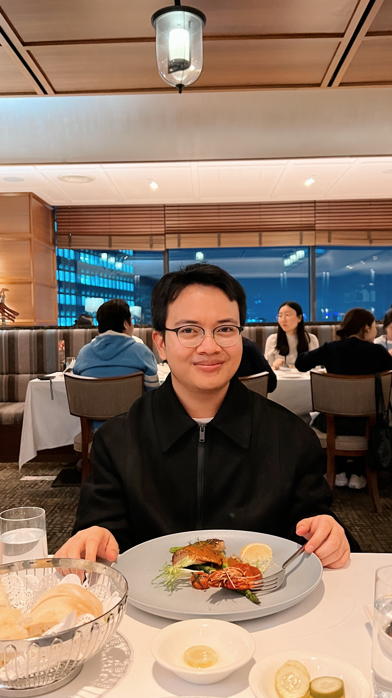
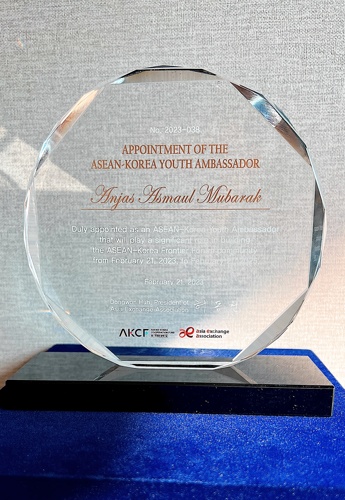
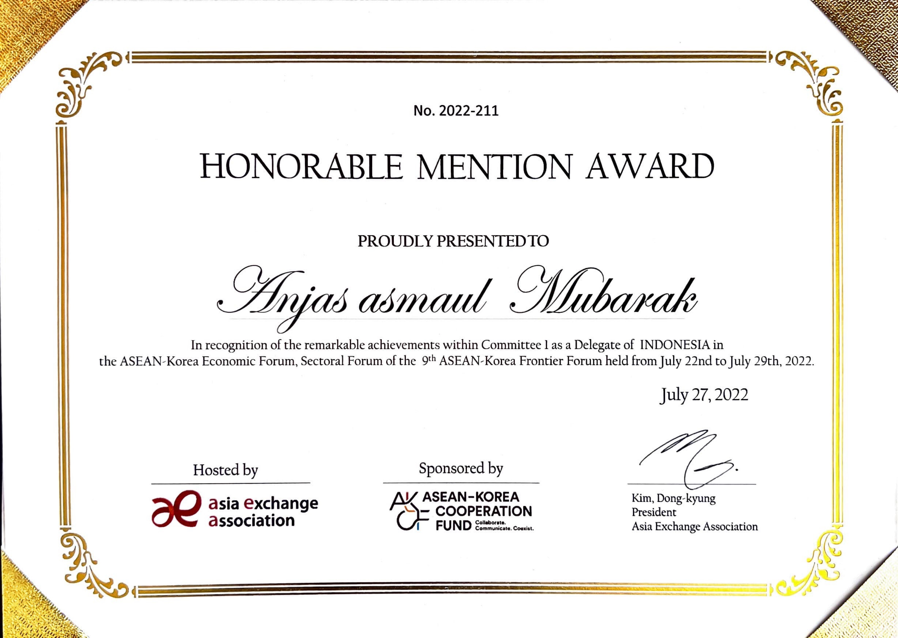
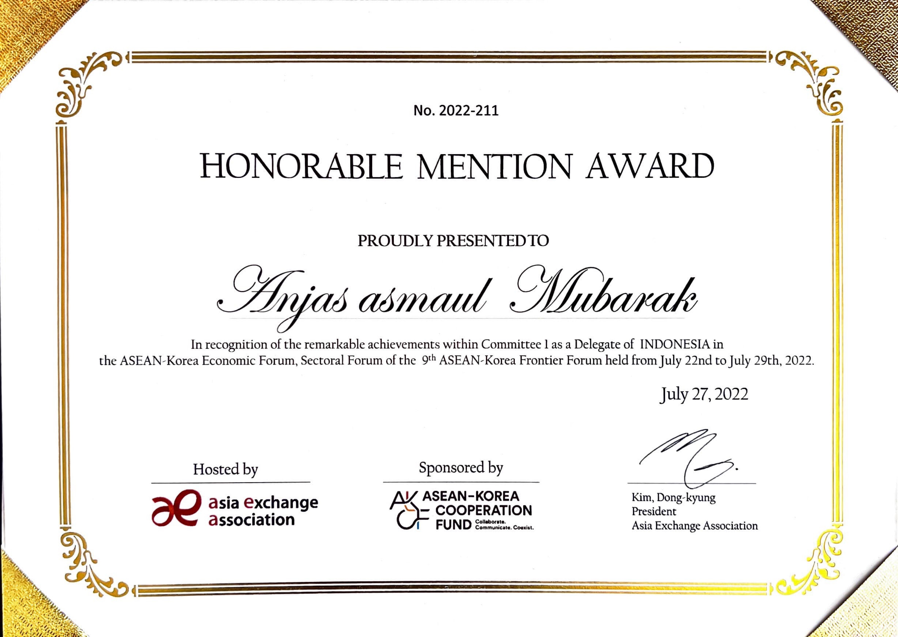
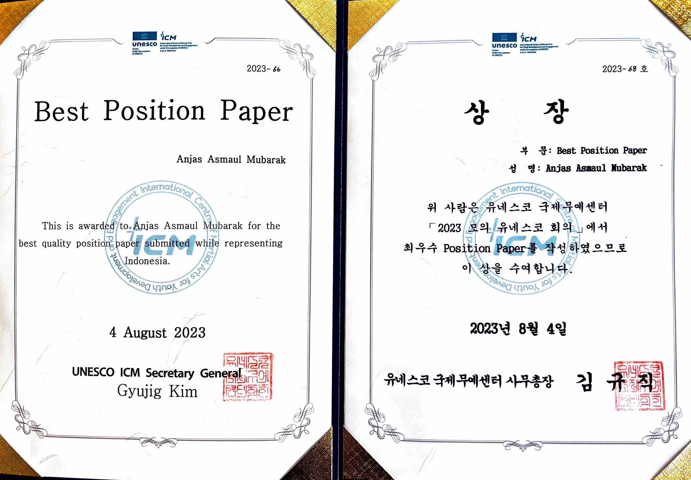
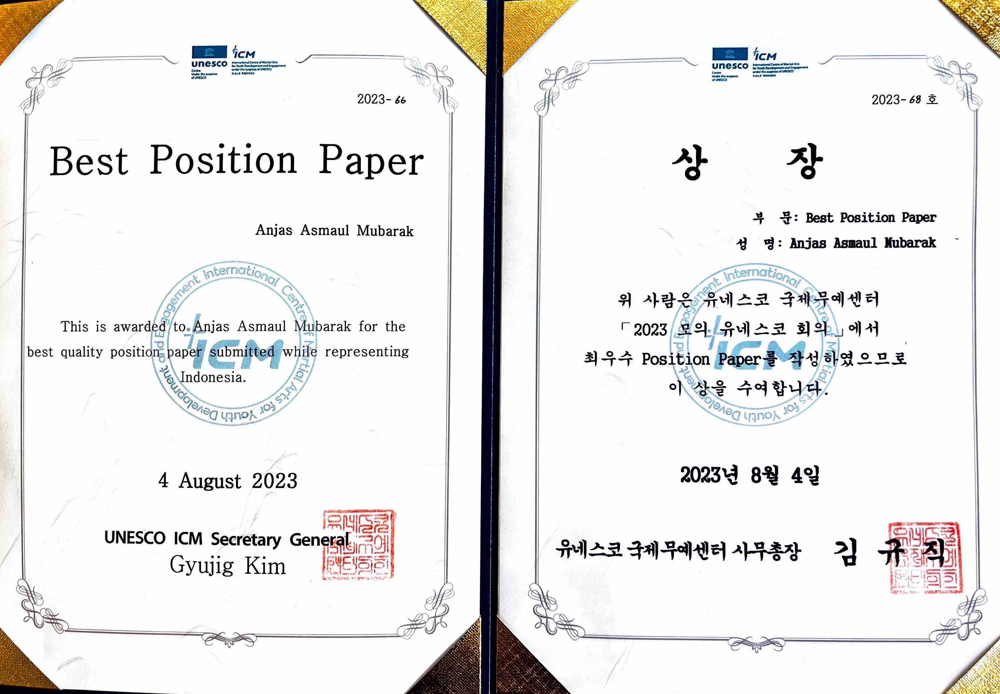

Anjas Asmaul Mubarak
Hi, thanks for stopping by!
Please navigate through my little portfolio as it lists my passion, my own objectives, and personal achievements!


Hi, thanks for stopping by!
Please navigate through my little portfolio as it lists my passion, my own objectives, and personal achievements!
I am a student at Pukyong National University majoring in Chemical Engineering Double Major English Language and Literature.
Passionate about diplomacy relation, english enthusiasms, youth international conferences, and some basic knowledge of asean-korea relations, european, international politics.
I always keeps a keen view of the reality of life thus approaching people with a positive mental attitude and always proving to be helpful with honest efforts and true dedication.
In my spare time, I enjoy exploring the culinary sights in South Korea, discover life as international student. From there, I grow myself create social media lifestyle contents!

I got the privilege to be an ASEAN-Korea Youth Ambassador and representing Indonesia.
It was humbling and it is a reminder that our voices and perspectives as young people matter and are valued.
Grateful beyond words for the appointment as youth ambassador and the prestigious gifts received.
(Honors & awards)
 


 

I did a presentation on the topic of "The Role of Youth in Resolving Racial Discrimination Towards Asians" and I grab the attention from the audience, I receive a massive amount praise from the judges and get the Grand Price!
Please click for the video below!
I obtained the Best Position Paper award at the 2023 UNESCO ICM Conference while representing my own country, Indonesia!